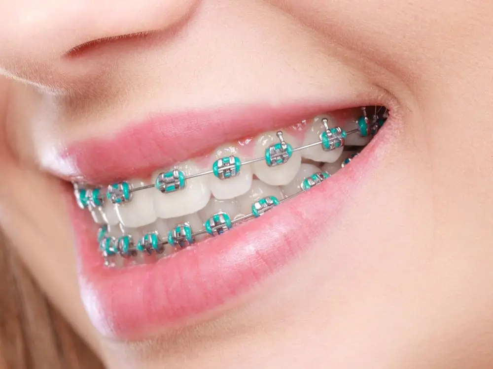
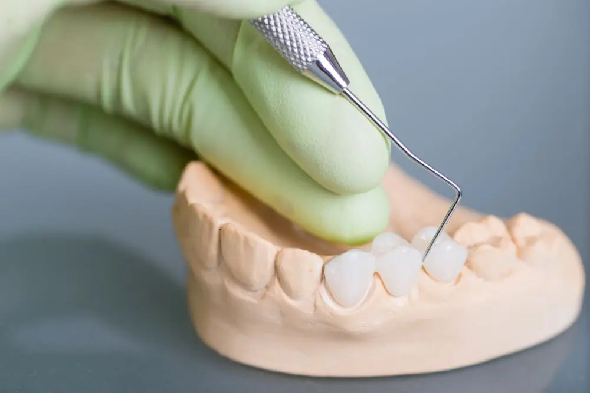

Düşlerinizdeki Gülümsemeye Ulaşın.
Sağlıklı Dişler, Mutlu Gülüşler Demek. Diş Sağlığınızı Önemsiyor, Gülümsemelerinizi Mükemmelleştiriyoruz.
Randevu AlınHakkımda

Eğitim
- Okan Üniversitesi Diş Hekimliği Fakültesi - Lisans (2014-2019)
- Okan Üniversitesi Ortodonti Anabilim Dalı - Doktora (2019-)
Üyelikler ve Aldığı Görevler
- Avrupa Diş Hekimliği Öğrencileri Birliği - Türkiye delegeliği (2015-2017)
- Avrupa Diş Hekimliği Öğrencileri Birliği - Başkan Yardımcılığı (2017-2019)
- Türk Ortodonti Derneği
- Samsun Dişhekimleri Odası
Sertifikalar ve Katıldığı Kongreler
- EDAD Estetik Diş Hekimliği Gülüş Tasarımı Eğitimi - 2021
- İstanbul Dental Academy Lamina Veneer Uygulamaları - 2020
- Osstem İleri İmplant Cerrahisi Eğitimi - 2019
- Aim Academy İmplant Üstü Protezler Semineri - 2018
- Diş Hekimlerinin Hukuki Sorumluluğu ve Hasta Hakları Kongresi - 2017
Tedaviler

Dolgu Uygulamaları

Porselen Diş

Diş Teli Tedavisi

İmplant Uygulamaları

Kanal Tedavisi
Diş Kaplama


Görüşleriniz
Bize ulaşın
Diş Hekimi Ayberk Kara